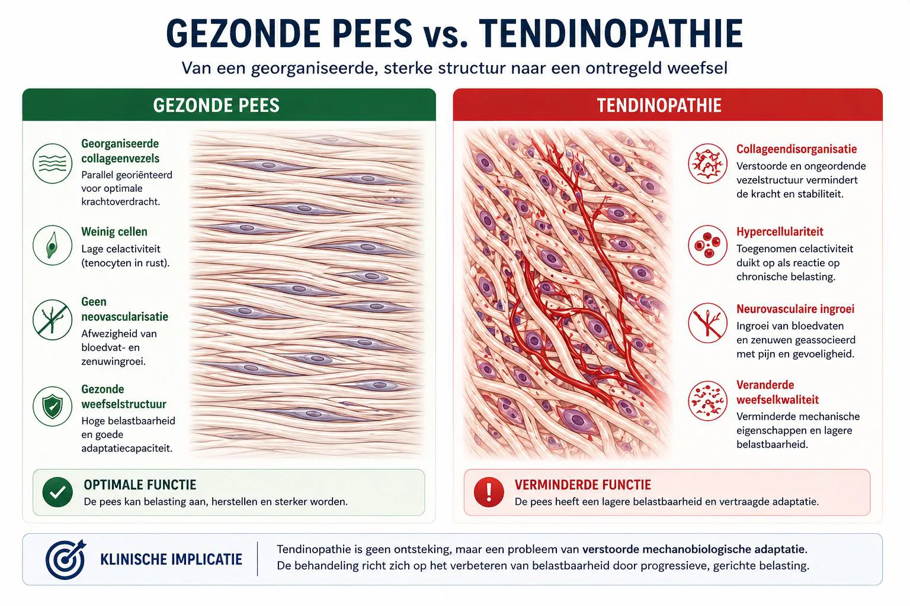
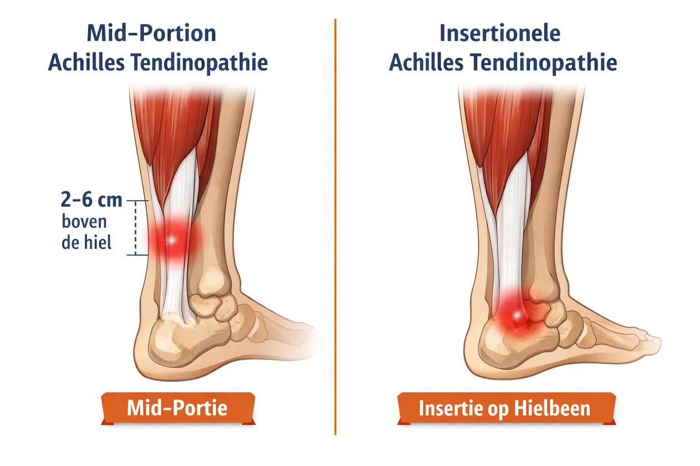
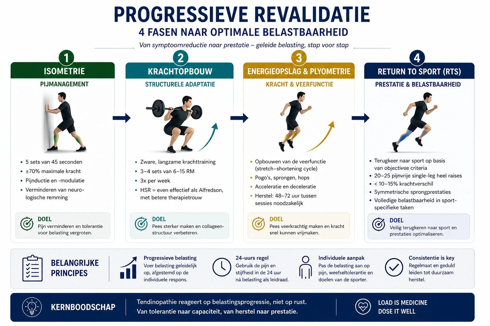

Achillespeesklachten behoren tot de meest hardnekkige blessures bij sporters. Hardlopers, voetballers, springers en sprinters krijgen er vroeg of laat mee te maken. Toch is de aanpak vaak nog gebaseerd op verouderde ideeën: ontsteking, rust, rekken en hopen dat het vanzelf overgaat.
De wetenschap laat inmiddels iets anders zien.
In dit artikel neem ik je mee in de huidige stand van zaken rondom achillespeesrevalidatie, gebaseerd op moderne inzichten uit de mechanobiologie én vertaald naar wat dit concreet betekent voor jouw training en herstel.
In dit blog leggen we uit:
Heb je de basisprincipes van peesrevalidatie nog niet gelezen? Begin dan daar. Dit artikel bouwt daarop voort.
Achillespeesklachten zijn zelden een ontsteking
Waar vroeger gesproken werd over tendinitis, weten we nu dat achillespeesklachten vrijwel nooit een klassieke ontsteking zijn. Histologisch onderzoek toont:
- een verstoorde collageenstructuur
- verhoogde activiteit van peescellen
- veranderingen in pijngeleiding
- soms neurovasculaire ingroei
Maar nauwelijks ontstekingscellen.
Daarom spreken we tegenwoordig van tendinopathie.
Belangrijk inzicht: we herstellen geen beschadigde pees, we vergroten de belastbaarheid van het gezonde weefsel. Of zoals we het vaak samenvatten: we trainen de donut, niet het gat.

Het continuüm-model als kompas
De Achillespees beweegt zich door verschillende stadia:
- reactief
- dysrepair
- degeneratief of reactief-op-degeneratief
Dit is geen statische diagnose, maar een dynamisch proces. De fase waarin jouw pees zich bevindt, bepaalt:
- hoe zwaar je kunt trainen
- welke oefeningen geschikt zijn
- hoe snel je mag opbouwen
Niet de MRI of echo stuurt de revalidatie, maar de reactie op belasting.
Mid-portion versus insertionele achillesklachten
Een cruciaal onderscheid dat vaak gemist wordt:
- Mid-portion klachten: 2–6 cm boven het hielbeen
- Insertionele klachten: ter hoogte van de aanhechting op het hielbeen
Deze twee vragen om een andere aanpak:
- andere bewegingsuitslagen
- andere compressiebelasting
- andere oefenselectie
Wat werkt voor de één, kan de ander juist verergeren.

Hoe sturen we de revalidatie?
1. Functionele voortgang meten
De VISA-A vragenlijst is internationaal de gouden standaard. Een score boven 90 wijst op praktisch volledig herstel.
2. Pijnmonitoring
Pijn tijdens trainen is toegestaan, mits gecontroleerd:
- pijn kleiner dan of gelijk aan 3–5/10
- geen duidelijke verergering na 24 uur
De 24-uurs respons is leidend. Pezen reageren vertraagd, niet direct.
De vier fasen van moderne achillesrevalidatie
Bij hoge pijngevoeligheid starten we met statische contracties.
Effect:
- pijnreductie
- doorbreken van neurologische remming
- behoud van kracht
Bijvoorbeeld:
- 5 × 45 sec
- ±70% maximale kracht
Hier wordt de pees echt sterker.
Zowel het klassieke Alfredson-protocol als Heavy Slow Resistance (HSR) zijn effectief. HSR heeft vaak de voorkeur vanwege:
- lagere frequentie
- betere therapietrouw
- vergelijkbare resultaten
Tempo, belasting en progressie zijn belangrijker dan de exacte oefenvorm.
Voor sporters is dit een cruciale fase. De achilles is geen kabel, maar een veer.
We bouwen gecontroleerd op richting:
- pogo’s
- sprongvormen
- accelereren en afremmen
Rust tussen deze sessies van 48–72 uur is essentieel voor peesadaptatie.
Terugkeer naar sport is geen moment, maar een proces.
Objectieve criteria helpen hierbij, zoals:
- 20–25 pijnvrije single-leg heel raises
- minder dan 10–15% krachtverschil
- symmetrische sprongprestaties
Pas dan is volledige sportbelasting verantwoord.

Wat helpt meestal niet
De wetenschap is hier duidelijk over:
- PRP: geen meerwaarde boven training
- corticosteroïden: korte termijn winst, lange termijn risico
- nachtspalken: geen extra effect
- passieve therapieën zonder actieve belasting
Training verandert de pees. De rest hooguit de pijnbeleving.
Hoe lang duurt herstel?
Verbetering treedt vaak op na 8–12 weken, maar volledig herstel bij sporters duurt regelmatig 6–12 maanden.
Dat is geen falen. Dat is biologie.
Conclusie
Achillespeesklachten vragen geen bescherming, maar doordachte belasting. Niet harder trainen, maar slimmer. Niet sneller, maar consistenter.
Met een goed opgebouwd, individueel belastingsprogramma is duurzaam herstel wél mogelijk, ook bij langdurige klachten.
Meer weten?
MAAK AFSPRAAK